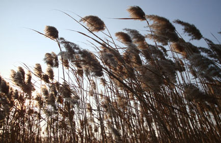

芦 苇
------------------------------------------------
|  |
|
芦苇通常高达1-3m. 植株直径平均10mm.最大可达14mm.生活力强, 生长迅速, 地下根状茎发达。群落外貌整齐, 植株密集, 常呈背景化, 盖度可达70%-90%。群落结构简单, 季相明显。冬天枯黄, 春天碧绿, 夏夭为花期, 花序紫红色, 秋天为果期, 白茫茫一片。其它植物在本群落中往往无法与芦苇竟争而被排斥, 仅在群落边缘, 有海三棱藤草、藤草、水莎草、糙叶苔等植物混生。芦苇群落生产量较高。 |